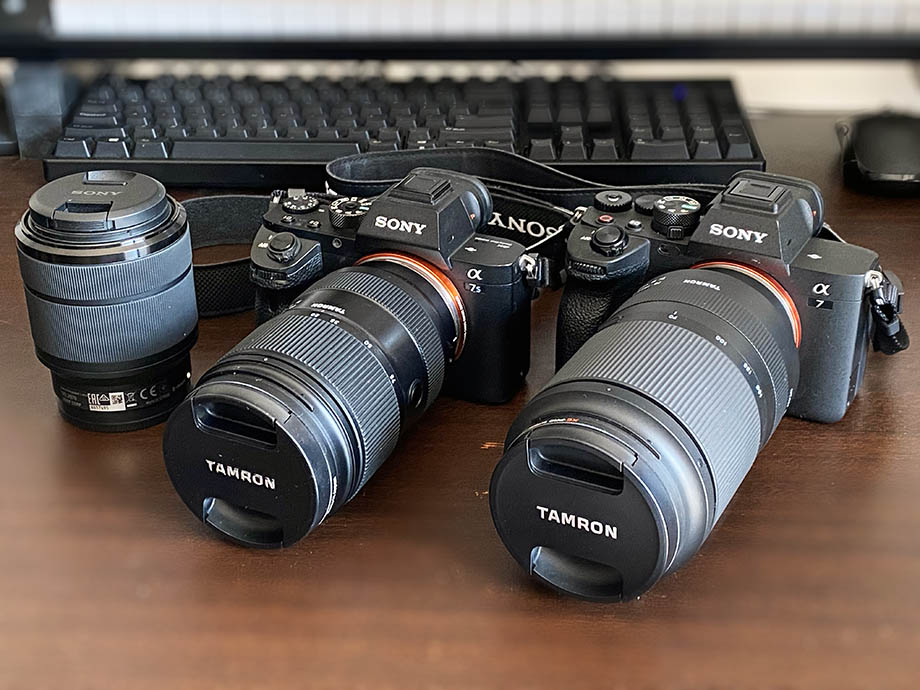

Sony α7SII と α7IV・Tamron 28-75mm と 70-180mm 買った
コレまで自分は以下のようなカメラを使ってきた。
- Nikon D5600 ダブルズームレンズキット
- 過去記事 : 2017-01-02 Nikon D5600 ダブルレンズキットを買った
- レンズは色々買ったけど最後はキットレンズ2本に戻った
- (その前に Nikon D3100 を持ってた)
- Olympus OM-D E-M10 Mark II + Panasonic Lumix G Vario 14-140mm F3.5-5.6 ASPH./POWER O.I.S.
- 過去記事 : 2019-03-28 Olympus OM-D E-M10 Mark II と Panasonic Lumix G Vario 14-140mm F3.5-5.6 ASPH./POWER O.I.S. を手に入れた
- D5600 より軽量な構成を求めて買った
- GoPro Hero 7 Black
- 過去記事 : 2019-03-21 GoPro7 Black を手に入れた
- アクションカム・我が子の出産の瞬間はこのカメラで撮られた
D5600 付属の AF-P レンズは爆速 AF だし、Olympus と Lumix のコンボは軽量で10倍ズームまで行けたので満足はしていたのだが、いずれも暗所性能が厳しめだった。
音楽をやっている弟に、コンサートの撮影を頼まれることがあり (ガチの仕事カメラマンではなく記録担当として)、その際にせっかくなら良い写真・動画を撮りたいと思っていたのだが、どうしても機材のスペック上、それ以上明るさを稼げなくてノイズが多くなってしまうことが、撮る側としては我慢ならなかった。依頼してきた弟は、出来上がった写真を見て「こんなんで全然オッケー」と言ってくれるが、撮っている側が満足いかないのである。
そこで、カメラを買い替えた。Sony α7 Basic シリーズの現行最新機種である α7IV と、高感度に強い S シリーズの1世代前の型である α7SII だ。

本当は α7SIII (高感度版の最新機種) が欲しいところではあったが、40万以上するので断念。α7SII はタッチパネルではないのでタッチフォーカスができずもどかしいが、MF も交えて頑張ることにした。サブ機という意味ではタッチパネルが付いている α7C か α7III もアリな値段だ (中古市場)。特に α7C の方はバリアングル液晶で、液晶を裏面にして保護できる仕組みなのが良い。


そしてレンズだが、F2.8 通しの、いわゆる大三元レンズの標準レンズと望遠レンズを、タムロン製で揃えることにした。Sony 純正のレンズは高すぎるｗ。
- Tamron 28-75mm F/2.8 Di III VXD G2 (Model A063)


- Tamron 70-180mm F/2.8 Di III VXD (Model A056)


F2.8 というレンズはコレまで使ったことがなかったのだが、昼の景色も夜の景色も別次元に感じる。勿論、マイクロフォーサーズだった Olympus、APS-C だった Nikon D5600 と比べて、α7 シリーズはフルサイズのイメージセンサーである点も大きいと思うが、それも含めて「光をどれだけ取り込めるか」という受光部の広さはこんなに影響するかとビックリした。
Sony αE マウントの難点は、超望遠レンズの製品ラインナップが少ない点だろうか。300mm 以上のラインナップは Nikon の方が多かったと思う。コレも APS-C 機で考えてたからかな？
カメラやギター関連の機材を手放して予算を作ったとはいえ、全てがペイできる金額ではなかったが、今回は奮発することにした。というのは、「明るいカメラ」はかねてより欲しいと思ってはいたが、「弟のコンサートでたまに使うくらいなら買わなくてもいいか」「今じゃなくても別にいいか」と考えていると何もできなくなってしまう、と感じたからである。「今やらなくたっていい」なんて言い始めたら何もやらない、何も持たないつまらない人間になってしまう。それではいかんと思い、まずは奮発して欲しいモノを買ってみて、使ってみて、何かしら自分の糧にしてやるんだ、と思った次第である。
まだコンサートでの撮影機会がないので真の実力は試せていないが、もう機材面で言い訳が立たなくなるほどの良い買い物をした。良い写真・動画が撮れるかどうか、あとは自分のカメラの腕次第である。頑張ろうではないか。